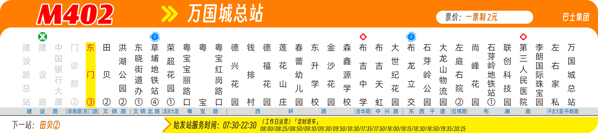

候选渲染
同一 M402 示例图、数据集与核查计划。选择运行候选，再点低分区域；三张局部图和相交元素路径同步切换。
包含历史 P0、当前 P1 无阈值与 60k 停止后接续的实际候选。图像统一离线重算；上下文与时间来自真实模型运行。交接耗时为两轮合计。相似度只诊断，每组两次不代表稳定效果。

相交元素是排查线索，不能据此断定差异由它造成；最多 12 个路径，未计旋转与遮挡。
红色越深表示差异越大；白色代表相似。核查计划的 styles 为空，未覆盖实例不能当作样式合格。
| 组合 | 结果 |
|---|